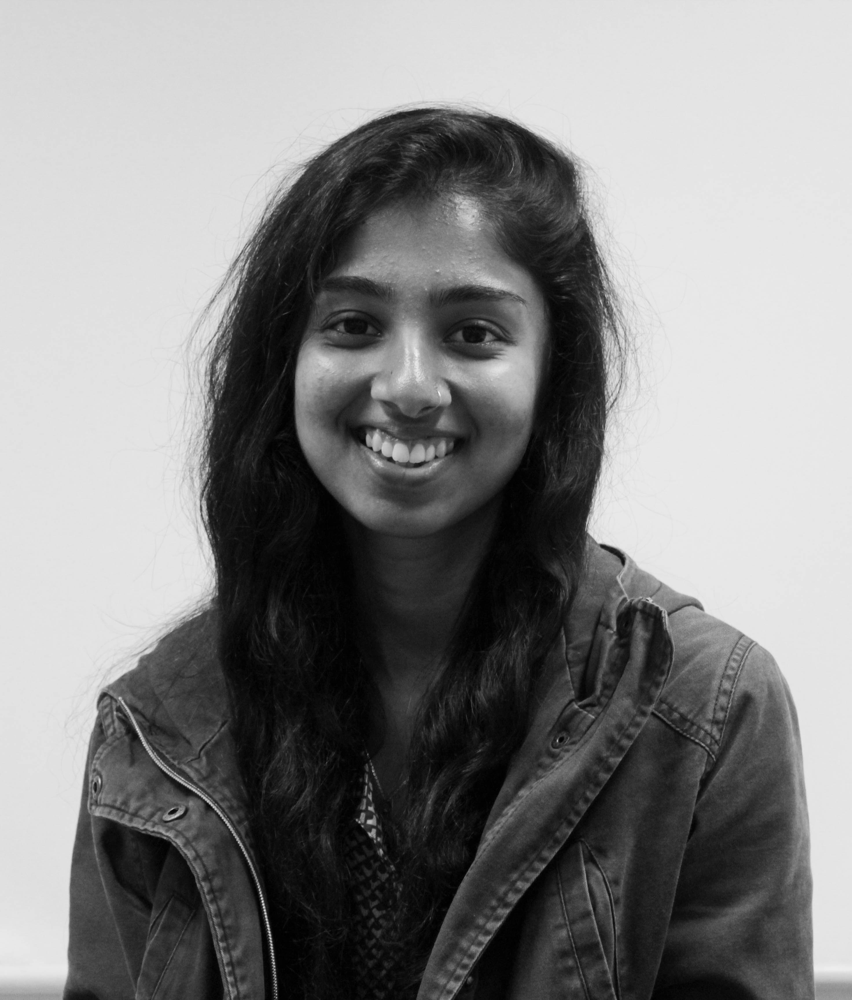
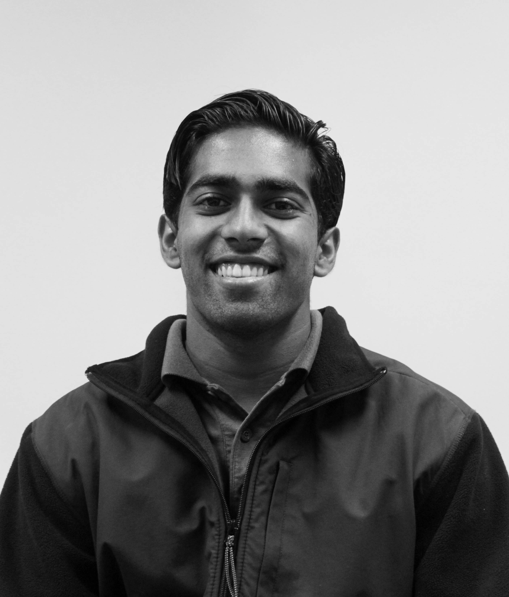
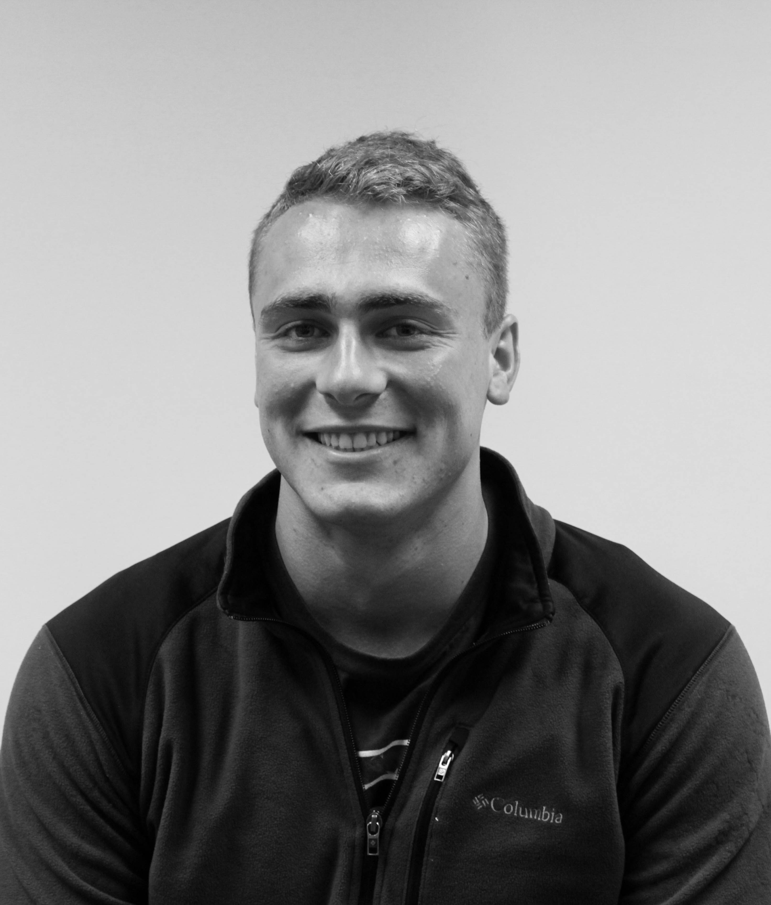
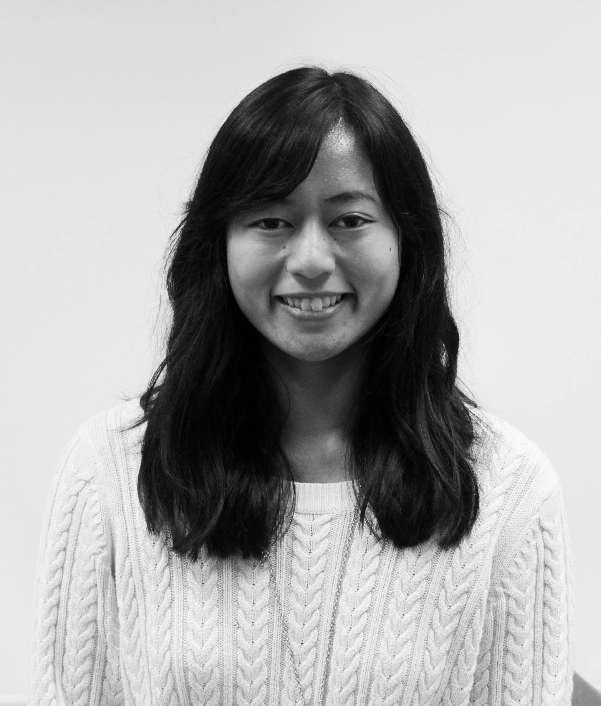
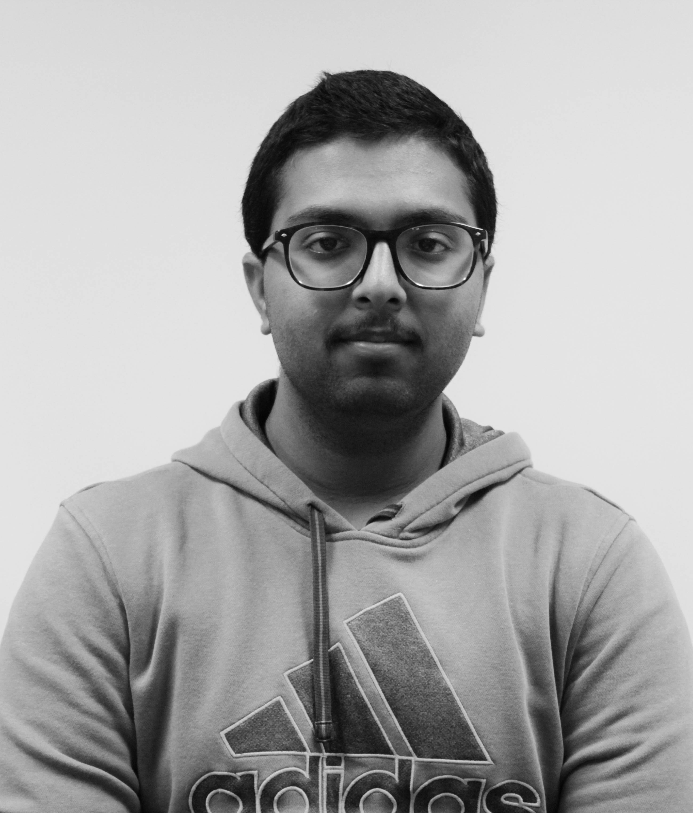
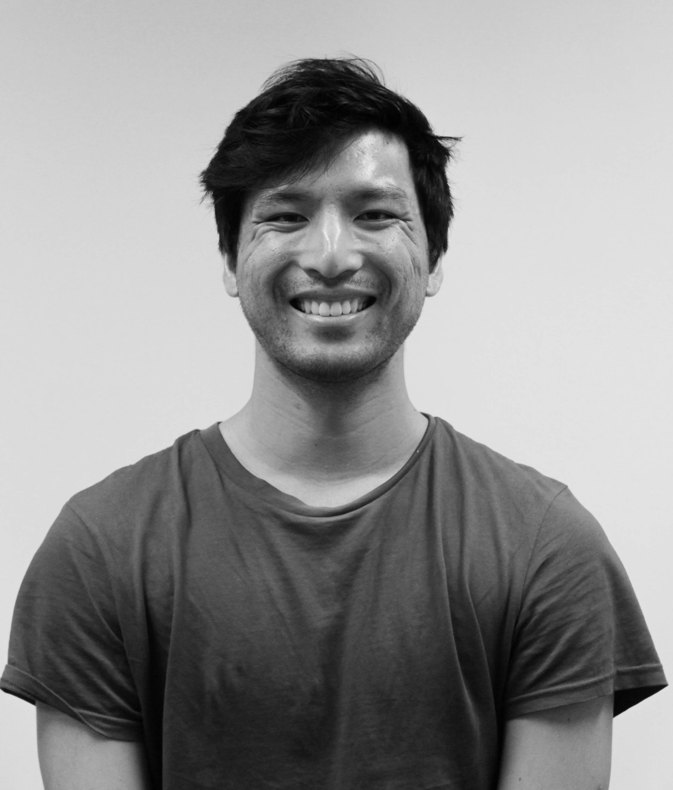
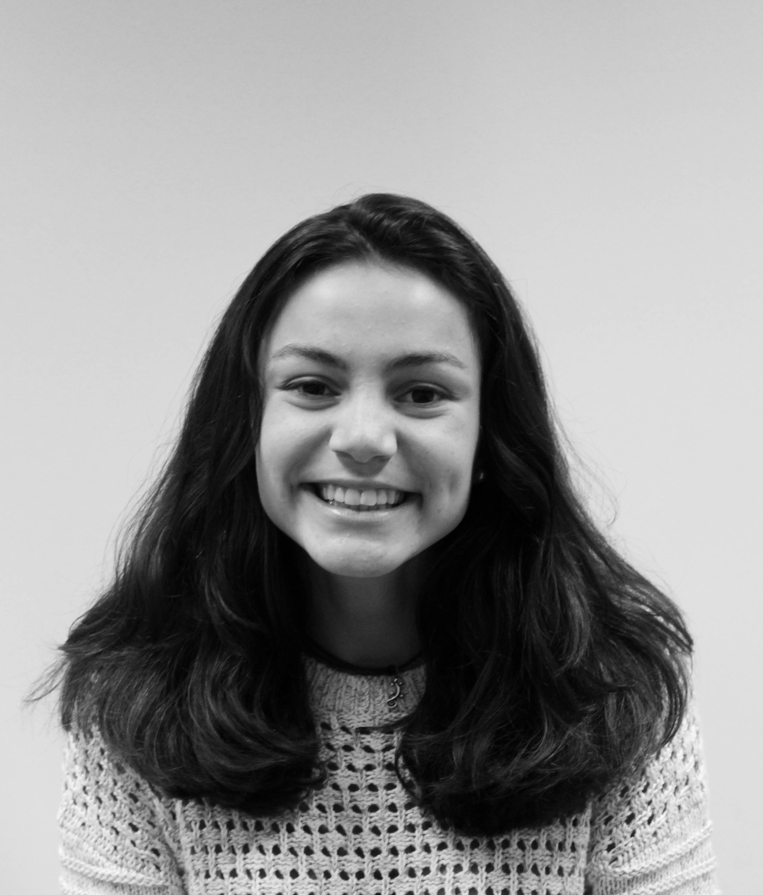

People
Board members, 2016–2017
Shraddha Gharmalkar· Chair
Shraddha is a fourth year Aerospace Engineering major at UCSD. She has been involved with AIAA since her freshman year as Treasurer, Vice-Chair, and Chair. She is a part of the UCSD Design Build Launch Team. She had the opportunity to intern as a Mechanical Engineer at the Gulfstream Aerospace Corporation and as a Design Engineer at Orbital ATK. She is primarily interested in spacecraft structures and dynamics. Shraddha hopes to bring all her experiences and enthusiasm to the AIAA members by helping students be a part of the wonderful and fascinating aerospace industry.
Kalpa Semasinghe· Vice-Chair
Kalpa is a third year Aerospace Engineering major. He aspires to get involved with the different kind of aerospace opportunities that will open up to him at UCSD. Currently, he is involved in DBF and Triton Rocket Club with which he hopes to explore the hands-on aspect of the field.Outside of academia, Kalpa has a passion for cinematography/filmmaking and continues to apply himself in that hobby.
Tom Bogott · Secretary
Tom is a fifth year Aerospace Engineering major, trying to understand engineering as a skill and a business. Currently, he is involved with DBF and another startup on campus. His passions, however, lie in outmaneuvering others in political arguments and the endless pursuit of fitness.
Man-Yeung Tsay · Treasurer
Man-Yeung is a fourth year Aerospace Engineering major with a minor in German Literature. He has been involved with AIAA since his freshman year and became involved with the board during his second year. In addition to AIAA, he is heavily involved in the community service through Alpha Phi Omeg, a professional co-ed community service fraternity. In his spare time, he is a motorcycle enthusiast- a weekend warrior carving canyons or tearing up the tracks.
Angelica de Guzman · Program Coordinator
Angelica is a senior majoring in Aerospace Engineering. She's been in AIAA since her freshman year and she joined the board her sophomore year as a program coordinator. She has been project manager of the UCSD Design, Build, Launch team since her sophomore year. Angelica is a space enthusiast and hopes to bring that to AIAA members!
Anish Sinha · Program Coordinator
Anish is a second year Computer Engineering student, and the program coordinator of AIAA at UCSD. He is passionate about four things: Robotics, Artificial Intelligence, Virtual Reality, and Space Exploration. He knows that all four are used in the space industry and hopes to one day use the skills he has learned in each of the four fields to build the next greatest inventions in space technology.
Tobin Lee · Program Coordinator
Tobin is a fourth year, Mechanical Engineering student with interests in physics and robotics. His dream is to work on projects that further technological advancement for the improvement of daily life and the benefit of others. His hobbies include playing volleyball, taking relaxing strolls around campus (when time permits), running, and shooting the breeze. As a member of AIAA, he hopes to develop leadership skills and to become more proactive in the engineering community.
Laura Morejon · Webmaster
Laura is a first year Aerospace Engineering student, and the newest addition to AIAA in UCSD. She is very excited to be a board member of such a fascinating club, and hopes that this position will only be the beginning of a college experience filled with learning and fun. She loves rockets and space, and can't wait to learn more each day.